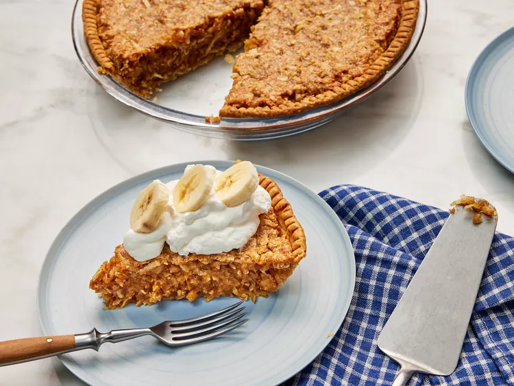

Sawdust Pie
Don't let the name fool you! This pie is anything but dusty. This old-fashioned dessert gets its name from the sweet, crumbly filling that looks like sawdust but tastes like a coconut pie, chess pie, and pecan pie filling in one.
This pantry staple pie is easy to whip up in under two hours and is sure to be a standout on the dessert table.
Ingredients
- 1/2 package refrigerated pie crusts, at room temperature
- 7 large egg whites, lightly beaten
- 1 1/2 cups unsweetenet flaked coconut
- 1 1/2 cups graham cracker crumbs
- 1 1/2 cups finely chopped walnuts
- 1 1/2 cups granulated sugar
- 1/4 teaspoon kosher salt
- 2 teaspoons vanilla extract
- whipped cream for serving
- scliced bananas for serving
Steps
-
Gather all ingredients. Preheat the oven to 350 degrees F (175 degrees C).
-
Fit pie crust into a 9-inch pie plate; fold edges over, and crimp with the tines of a fork. Poke holes evenly along the sides and bottom of pie crust with a fork. Bake in the preheated oven until pie crust is dry to the touch on the bottom and sides, about 8 minutes. Remove from oven and let cool for 5 minutes.
-
Gently fold together egg whites, flaked coconut, graham cracker crumbs, walnuts, sugar, salt, and vanilla extract in a large bowl until fully combined and a thick mixture forms, about 1 minute.
-
Transfer egg white mixture to prepared pie crust and gently spread it into an even layer.
-
Return to the oven and bake at 350 degrees F (175 degrees C) until pie crust edges are golden brown and the center is set, about 25 minutes. Remove from oven and let cool completely on a wire rack, about 1 hour.
-
Slice and top with whipped cream and sliced bananas.